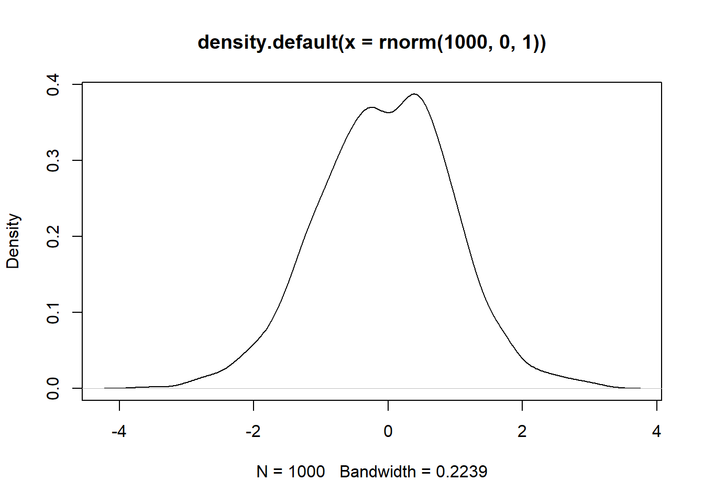
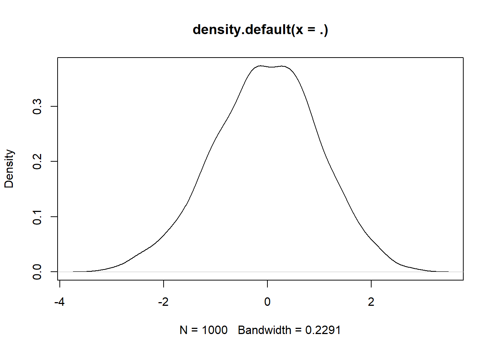
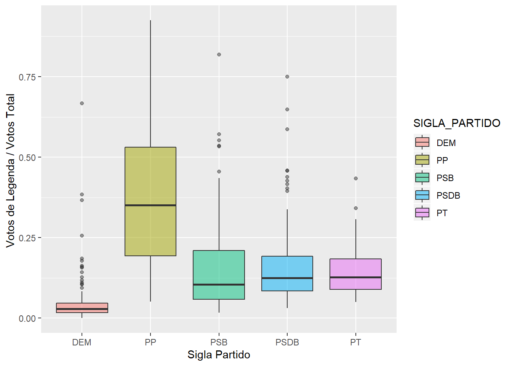
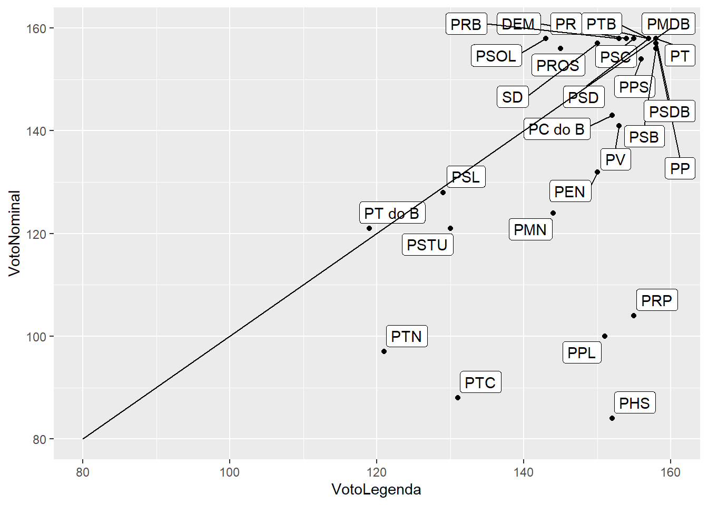

Introdução Rápida ao R
Planos para hoje.
Este código é uma curta introdução ao R. Este material foi adaptado de outros dois workshops em inglês que eu ofertei na Universidade de Maryland – ambos estão disponíveis na ementa deste workshop. A idéia deste material é cobrir questões básicas no R, e introduzir manipulacao de dados usando tidyverse.
Este tutorial foi adaptado de materiais de Eric Dunford, Natalia Bueno, e Rochelle Terman
O que é o R?
R é uma linguagem de programação de código aberto versátil, útil tanto para estatística quanto para ciência de dados. É Inspirado na linguagem de programação S..
- Software de código aberto.
- Superior (se não apenas comparável) às alternativas comerciais. Em janeiro de 2019, R ocupava o 12º lugar no índice TIOBE, que mede a popularidade das linguagens de programação. É amplamente utilizado na academia e na indústria, especialmente no círculo de cientistas de dados.
- Disponível em todas as plataformas (Unix, Windows, Linux).
- Como resultado de ser uma linguagem de dados aberta, se você fizer sua análise em R, qualquer pessoa poderá replicá-la facilmente.
- Não apenas para estatística, mas também programação de uso geral.
- É linguagem de objetos (= R possui objetos) e funcional (= Você pode escrever funções).
- Grande e crescente comunidade de usuários.
Rstudio
O RStudio é a principal interface gráfica do usuário (GUI) e o ambiente de desenvolvimento integrado (IDE) que facilita o uso do R.
Navegando no R Studio.

Instalando um pacote no R
Existem vários pacotes que são fornecidos com a distribuição R. Eles são conhecidos como pacotes básicos. Porém, há pacotes criados por desenvolvedores que precisamos instalar e ativar no R.
Pacotes são coleções de funções em R, dados e códigos compilados juntamente. Os passos para instalar e ativar um pacote são os seguintes.
- Instalar o pacote – somente uma vez.
- Ativar o pacote
- Have fun!
# Instalando um pacote.
install.packages("ggplot2")
install.packages("tidyverse")# Activando the package
library("ggplot2")
library("tidyverse")Comandos Básicos em R
Atribuindo um objeto
Em termos simples, um “objeto” é um texto que representa um valor específico. Os nomes dos objetos podem conter apenas letras, números, ou sublinhados e pointos.
# Objeto numérico
x <- 3
# objeto de texto
my_name <- "Tiago"
# Onde estão?
ls()[1] "my_name" "x" # Remova um objeto
rm(x)
# Checando de novo
ls()[1] "my_name"# Você pode reescrevê-los.
my_name <- "Tiago Da Silva Ventura"
my_name[1] "Tiago Da Silva Ventura"Estrutura dos Dados.
Um objeto pode ter diferente estruturas. Vamos vê-las rapidamente.
vectormatrixdata.framelistarray
Vector
# vetor de números
X <- c(1, 2.3, 4, 5, 6.78, 6:10)
X [1] 1.00 2.30 4.00 5.00 6.78 6.00 7.00 8.00 9.00 10.00# Class
class(X)[1] "numeric"Data Frame
O tipo de objeto mais útil para análise de dados. É como uma planilha de excel no seu ambiente R.
# Coercing
as.data.frame(X) X
1 1.00
2 2.30
3 4.00
4 5.00
5 6.78
6 6.00
7 7.00
8 8.00
9 9.00
10 10.00# Create a data frame
data <- data.frame(name = "Tiago", last_name = "ventura", school = "UMD", age = 30)
data name last_name school age
1 Tiago ventura UMD 30Matrix
Igual ao data frame, porém comporta somente um tipo de dado.
# Coerce to a matrix
as.matrix(X) [,1]
[1,] 1.00
[2,] 2.30
[3,] 4.00
[4,] 5.00
[5,] 6.78
[6,] 6.00
[7,] 7.00
[8,] 8.00
[9,] 9.00
[10,] 10.00List
A lista é extremamente útil para aplicações mais avançadas. Funciona como um repositório de vários objetos. É como uma grande gaveta onde você pode salvar sua bagunça.
# coerce to a list
as.list(X)[[1]]
[1] 1
[[2]]
[1] 2.3
[[3]]
[1] 4
[[4]]
[1] 5
[[5]]
[1] 6.78
[[6]]
[1] 6
[[7]]
[1] 7
[[8]]
[1] 8
[[9]]
[1] 9
[[10]]
[1] 10# or
list <- list(X, data)
# See the list
str(list)List of 2
$ : num [1:10] 1 2.3 4 5 6.78 6 7 8 9 10
$ :'data.frame': 1 obs. of 4 variables:
..$ name : Factor w/ 1 level "Tiago": 1
..$ last_name: Factor w/ 1 level "ventura": 1
..$ school : Factor w/ 1 level "UMD": 1
..$ age : num 30Working Directory
Definir sua estação de trabalho é um passo que sempre causa muita dor de cabeça à iniciantes em R. É simples, porém, como somos treinados com o point-and-click do windows, no começo pode parecer difícil.
O R não sabe intuitivamente onde estão seus dados. Se os dados estiverem em uma pasta especial chamada “pesquisa super secreta”, temos que dizer ao R como chegar lá.
Podemos fazer isso de duas maneiras:
- Defina o diretório de trabalho para essa pasta
- Estabeleça o caminho para essa pasta
Toda vez que o R é inicializado, ele olha para o mesmo lugar, a menos que seja solicitado a ir para outro lugar.
getwd() # Obter o diretório de trabalho atual[1] "C:/Users/Tiago Ventura/Dropbox/webscraping_workshop_ufpa/html/dia_00"Definindo um novo diretório de trabalho
# adicione onde você quer o R olhando.
setwd("C:/Users/Tiago Ventura/Dropbox/webscraping_workshop_ufpa/html/dia_00")Manipulação de dados com o Tidyverse
O tidyverse nada mais é do que um conjunto de pacotes R construídos para nos ajudar a fazer ciência de dados. Todos os pacotes compartilham a mesma filosofia de design, gramática e estruturas de dados subjacentes. Portanto, se você aprender um, os outros pacotes ficarão mais fáceis. Os principais pacotes do tidyverse são:
dplyr: para manipulação de dados
ggplot2: para visualização de dados
tidyr: para modelagem e gerenciamento de dados
purrr: para otimizar seu código e para programação funcional
readr: para abrir e organizar os dados
Nessa curta introdução, abordaremos principalmente o belo mundo do gerenciamento de dados usando dplyr.
Por que devo usar os pacotes tidyverse?
As principais vantagens:
Mais fácil de executar análise de dados em comparação com a base R
Aument substancialmente quão legível seu código parece.
Integra bem com uma série de outros pacotes.
Programadores mais avançados usam, portanto, provavelmente você precisa aprender para ler códigos no futuro.
Instalação
# Install from CRAN
install.packages("tidyverse")
# Or the development version from GitHub install.packages('devtools')
devtools::install_github("hadley/tidyverse")library(tidyverse)O pipe
Todos os pacotes no tidyverse dependem do uso da função pipe %>% do pacote magritt. O pipe é seu amigo, lembre-se disso, portanto vamos aprender a usá-lo.
A idéia por trás do pipe é bastante simples: você coloca as coisas umas em seguida das outras. O objetivo é evitar como o R lê códigos de dentro para fora.
A lógica com pipe: primeiro o objeto, depois as funções e, em seguida, uma sequência de funções. O pipe torna possível encadear facilmente uma sequência de funções
# Exemplo 1
# R
round(exp(diff(log(runif(100, 0, 1)))), 1)
# Com pipe
runif(100, 0, 1) %>% log() %>% diff() %>% exp() %>% round(., 1) # or round(1)# OBSERVAÇÃO AQUI: se for uma função do tidyverse, os dados serão sempre o
# primeiro argumento, portanto, não é necessário adicionar o período. Se não
# for, você deve adicionar o período no argumento de dados
# data %>% function_tidyverse() %>% lm( y~x, data=. )
mtcars %>% lm(mpg ~ cyl, data = .) %>% coef()(Intercept) cyl
37.88458 -2.87579 # Exampl2 2: Graph
plot(density(rnorm(1000, 0, 1)))
# With pipe
rnorm(1000, 0, 1) %>% density() %>% plot()
Dplyr para Manipulação de Dados.
O dplyr é o pacote tidyverse mais famoso. Ele lida com gerenciamento de dados. É o meu pacote favorito em todo o mundo R. Comecei a trabalhar com o dplyr dois anos depois de aprender R, e isso realmente facilitou minha vida.
Acessando dados. Bonus: electionsBR
O primeiro passo em todas as análises é abrir seu banco de dados. Aqui, como um bonus, vamos utilizar dados eleitorais acessados via electionsBR. A documentação para este pacote está aqui. O electionsBRé um exemplo fenômenal das vantagens de utilizar R. É um pacote de R que agregar várias funções para acessar facilmente dados eleitorais disponíveis no TSE.
Um dos criadores do pacote, Fernando Meirelese, escreveu um tutorial super útil para o pacote. Vocês podem visitar.
Vamos baixar a votaçao por partidos no Pará, agregados por zonas eleitorais.
# install.packages('electionsBR')
library(electionsBR)
library(kableExtra)
# Importando dados
d <- party_mun_zone_fed(2014, uf = "PA")
# O que sao os dados?
glimpse(d)Observations: 11,961
Variables: 22
$ DATA_GERACAO <chr> "17/05/2018", "17/05/2018", "17/05/2018", ...
$ HORA_GERACAO <drtn> 04:15:39, 04:15:39, 04:15:39, 04:15:39, 0...
$ ANO_ELEICAO <dbl> 2014, 2014, 2014, 2014, 2014, 2014, 2014, ...
$ NUM_TURNO <dbl> 1, 1, 2, 2, 2, 1, 1, 1, 1, 1, 1, 1, 1, 1, ...
$ DESCRICAO_ELEICAO <chr> "Eleições Gerais 2014", "Eleições Gerais 2...
$ SIGLA_UF <chr> "PA", "PA", "PA", "PA", "PA", "PA", "PA", ...
$ SIGLA_UE <chr> "PA", "PA", "PA", "PA", "PA", "PA", "PA", ...
$ CODIGO_MUNICIPIO <chr> "04057", "04340", "04316", "05274", "04600...
$ NOME_MUNICIPIO <chr> "AFUÁ", "AURORA DO PARÁ", "BONITO", "SANTA...
$ NUMERO_ZONA <dbl> 16, 49, 11, 2, 23, 57, 57, 62, 86, 34, 74,...
$ CODIGO_CARGO <dbl> 7, 7, 3, 3, 3, 5, 6, 6, 6, 6, 6, 6, 6, 6, ...
$ DESCRICAO_CARGO <chr> "Deputado Estadual", "Deputado Estadual", ...
$ TIPO_LEGENDA <chr> "C", "C", "C", "C", "C", "P", "C", "C", "C...
$ NOME_COLIGACAO <chr> "AQUI O PARÁ TEM CHANCE", "PDT, PPL, PTN E...
$ COMPOSICAO_LEGENDA <chr> "PTC / PT do B", "PDT / PPL / PTN / PSL", ...
$ SIGLA_PARTIDO <chr> "PTC", "PPL", "PSDB", "PSDB", "PSDB", "PST...
$ NUMERO_PARTIDO <dbl> 36, 54, 45, 45, 45, 16, 10, 11, 14, 16, 25...
$ NOME_PARTIDO <chr> "Partido Trabalhista Cristão", "Partido Pá...
$ QTDE_VOTOS_NOMINAIS <dbl> 91, 179, 4612, 1113, 3092, 3, 25, 4, 736, ...
$ QTDE_VOTOS_LEGENDA <dbl> 4, 11, 0, 0, 0, 0, 4, 29, 27, 8, 20, 6, 19...
$ TRANSITO <chr> "N", "N", "N", "N", "N", "N", "N", "N", "N...
$ SEQUENCIAL_LEGENDA <dbl> 1.4e+11, 1.4e+11, 1.4e+11, 1.4e+11, 1.4e+1...Funções
As mais úteis
- select(): select colunas
- mutate(): cria novas variáveis e altera existentes
- filter(): filtra o banco de dados
- summarize(): sumariza os dados
- group_by(): agrupa e faz análise de acordo com as variáveis.
- slice(): seleciona linhas específicas
Some others
- count(): coonta dos dados por subgroup.
- arrange(): ordena o banco de dados por colunas
- distinct(): elimina repetições
- n(): conta quantas observações há em dados agrupados.
- sample_n(): Selecion N amostras do seu banco de dadosl
- glimpse(): Fornece um sumário dos seus dados. quickly preview the data
- top_n(): Seleciona por linhas de acordo com o rank das variáveis.
Select
# Dplyr
d <- d %>% select(CODIGO_CARGO, NOME_COLIGACAO, SIGLA_PARTIDO, NOME_MUNICIPIO,
QTDE_VOTOS_NOMINAIS, QTDE_VOTOS_LEGENDA)
# Se voce nao quiser usar o pipe
select(d, CODIGO_CARGO, NOME_COLIGACAO, SIGLA_PARTIDO, NOME_MUNICIPIO, QTDE_VOTOS_NOMINAIS,
QTDE_VOTOS_LEGENDA)# A tibble: 11,961 x 6
CODIGO_CARGO NOME_COLIGACAO SIGLA_PARTIDO NOME_MUNICIPIO
<dbl> <chr> <chr> <chr>
1 7 AQUI O PARÁ T~ PTC AFUÁ
2 7 PDT, PPL, PTN~ PPL AURORA DO PARÁ
3 3 JUNTOS COM O ~ PSDB BONITO
4 3 JUNTOS COM O ~ PSDB SANTA CRUZ DO~
5 3 JUNTOS COM O ~ PSDB NOVA IPIXUNA
6 5 PARTIDO ISOLA~ PSTU SÃO DOMINGOS ~
7 6 A FORÇA DA NO~ PRB BREJO GRANDE ~
8 6 UNIÃO PELO PA~ PP PIÇARRA
9 6 UNIÃO PELO PA~ PTB CURRALINHO
10 6 FRENTE DE ESQ~ PSTU ITAITUBA
# ... with 11,951 more rows, and 2 more variables:
# QTDE_VOTOS_NOMINAIS <dbl>, QTDE_VOTOS_LEGENDA <dbl># Retirar Coluna
d %>% select(-CODIGO_CARGO)# A tibble: 11,961 x 5
NOME_COLIGACAO SIGLA_PARTIDO NOME_MUNICIPIO QTDE_VOTOS_NOMI~
<chr> <chr> <chr> <dbl>
1 AQUI O PARÁ T~ PTC AFUÁ 91
2 PDT, PPL, PTN~ PPL AURORA DO PARÁ 179
3 JUNTOS COM O ~ PSDB BONITO 4612
4 JUNTOS COM O ~ PSDB SANTA CRUZ DO~ 1113
5 JUNTOS COM O ~ PSDB NOVA IPIXUNA 3092
6 PARTIDO ISOLA~ PSTU SÃO DOMINGOS ~ 3
7 A FORÇA DA NO~ PRB BREJO GRANDE ~ 25
8 UNIÃO PELO PA~ PP PIÇARRA 4
9 UNIÃO PELO PA~ PTB CURRALINHO 736
10 FRENTE DE ESQ~ PSTU ITAITUBA 9
# ... with 11,951 more rows, and 1 more variable: QTDE_VOTOS_LEGENDA <dbl>Filter.
# Somente o PT
d %>% filter(SIGLA_PARTIDO == "PT")# A tibble: 474 x 6
CODIGO_CARGO NOME_COLIGACAO SIGLA_PARTIDO NOME_MUNICIPIO
<dbl> <chr> <chr> <chr>
1 5 TODOS PELO PA~ PT TRAIRÃO
2 6 TODOS PELO PA~ PT CONCEIÇÃO DO ~
3 7 TODOS PELO PA~ PT NOVA ESPERANÇ~
4 5 TODOS PELO PA~ PT OURILÂNDIA DO~
5 7 TODOS PELO PA~ PT OURÉM
6 5 TODOS PELO PA~ PT BAGRE
7 5 TODOS PELO PA~ PT SALINÓPOLIS
8 6 TODOS PELO PA~ PT BARCARENA
9 6 TODOS PELO PA~ PT BELÉM
10 7 TODOS PELO PA~ PT INHANGAPI
# ... with 464 more rows, and 2 more variables: QTDE_VOTOS_NOMINAIS <dbl>,
# QTDE_VOTOS_LEGENDA <dbl># Duas condicoes
d %>% filter(SIGLA_PARTIDO == "PT", NOME_MUNICIPIO == "BELÉM")# A tibble: 33 x 6
CODIGO_CARGO NOME_COLIGACAO SIGLA_PARTIDO NOME_MUNICIPIO
<dbl> <chr> <chr> <chr>
1 6 TODOS PELO PA~ PT BELÉM
2 6 TODOS PELO PA~ PT BELÉM
3 7 TODOS PELO PA~ PT BELÉM
4 7 TODOS PELO PA~ PT BELÉM
5 6 TODOS PELO PA~ PT BELÉM
6 6 TODOS PELO PA~ PT BELÉM
7 5 TODOS PELO PA~ PT BELÉM
8 7 TODOS PELO PA~ PT BELÉM
9 7 TODOS PELO PA~ PT BELÉM
10 6 TODOS PELO PA~ PT BELÉM
# ... with 23 more rows, and 2 more variables: QTDE_VOTOS_NOMINAIS <dbl>,
# QTDE_VOTOS_LEGENDA <dbl>Mutate: Criar novas variáveis
# Razão entre a quantidade de votos de legenda e nominais para deputado
# federal
# Primeiro, limite a deputados federais.
d <- d %>% filter(CODIGO_CARGO == 6)
d %>% mutate(razaovotos = QTDE_VOTOS_LEGENDA/(QTDE_VOTOS_NOMINAIS + QTDE_VOTOS_LEGENDA)) %>%
select(razaovotos, SIGLA_PARTIDO, NOME_MUNICIPIO)# A tibble: 4,740 x 3
razaovotos SIGLA_PARTIDO NOME_MUNICIPIO
<dbl> <chr> <chr>
1 0.138 PRB BREJO GRANDE DO ARAGUAIA
2 0.879 PP PIÇARRA
3 0.0354 PTB CURRALINHO
4 0.471 PSTU ITAITUBA
5 0.0170 DEM TUCUMÃ
6 1 PRP BAIÃO
7 0.463 PRP NOVO REPARTIMENTO
8 0.109 PRB ALMEIRIM
9 0.0222 PRB BELTERRA
10 0.119 PDT BELÉM
# ... with 4,730 more rowsArrange: para ordernar
# What was the largest difference in gols?
d %>% mutate(razaovotos = QTDE_VOTOS_LEGENDA/(QTDE_VOTOS_NOMINAIS + QTDE_VOTOS_LEGENDA)) %>%
select(razaovotos, SIGLA_PARTIDO, NOME_MUNICIPIO) %>% arrange(desc(razaovotos))# A tibble: 4,740 x 3
razaovotos SIGLA_PARTIDO NOME_MUNICIPIO
<dbl> <chr> <chr>
1 1 PRP BAIÃO
2 1 PMN SANTA LUZIA DO PARÁ
3 1 PTN TUCUMÃ
4 1 PTC XINGUARA
5 1 PPL DOM ELISEU
6 1 PRP OURÉM
7 1 PTN PRIMAVERA
8 1 PT do B PIÇARRA
9 1 PTN SÃO CAETANO DE ODIVELAS
10 1 PRP MARACANÃ
# ... with 4,730 more rows# Elimine 1. Sao partidos que receberam somente votos de legenda
d %>% mutate(razaovotos = QTDE_VOTOS_LEGENDA/(QTDE_VOTOS_NOMINAIS + QTDE_VOTOS_LEGENDA)) %>%
select(razaovotos, SIGLA_PARTIDO, NOME_MUNICIPIO) %>% arrange(desc(razaovotos)) %>%
filter(razaovotos != 1)# A tibble: 3,901 x 3
razaovotos SIGLA_PARTIDO NOME_MUNICIPIO
<dbl> <chr> <chr>
1 0.978 PRP FLORESTA DO ARAGUAIA
2 0.974 PPL NOVA ESPERANÇA DO PIRIÁ
3 0.974 PHS PARAGOMINAS
4 0.974 PRP CAPITÃO POÇO
5 0.972 PRP TUCUMÃ
6 0.971 PRP TUCURUÍ
7 0.967 PHS MARABÁ
8 0.964 PHS DOM ELISEU
9 0.963 PRP VISEU
10 0.961 PHS SANTARÉM
# ... with 3,891 more rowsVamos agora extrair algo mais interessante desses dados, e combinar algumas operacoes. Vamos ver a distribuição para votos de legenda para os maiores partidos do Brasil.
d_new <- d %>%
# Repetimos o que fizemos
mutate(razaovotos = QTDE_VOTOS_LEGENDA/(QTDE_VOTOS_NOMINAIS + QTDE_VOTOS_LEGENDA)) %>%
select(razaovotos, SIGLA_PARTIDO, NOME_MUNICIPIO) %>%
filter(razaovotos != 1) %>%
# Vamos filtrar pelos 5 maiores partidos
filter(SIGLA_PARTIDO %in% c("PT", "PSDB", "PSB", "DEM", "PP"))
# Grafico
ggplot(d_new, aes(y = razaovotos, x = SIGLA_PARTIDO, fill = SIGLA_PARTIDO)) +
geom_boxplot(alpha = 0.5) +
xlab("Sigla Partido") +
ylab("Votos de Legenda / Votos Total ")
Slice: Para Selecionar Linhas
# Mais votos do PSL
d %>% arrange(desc(QTDE_VOTOS_NOMINAIS)) %>% filter(SIGLA_PARTIDO == "PSL") %>%
slice(1:5)# A tibble: 5 x 6
CODIGO_CARGO NOME_COLIGACAO SIGLA_PARTIDO NOME_MUNICIPIO QTDE_VOTOS_NOMI~
<dbl> <chr> <chr> <chr> <dbl>
1 6 DEFENDENDO O ~ PSL BARCARENA 2025
2 6 DEFENDENDO O ~ PSL NOVO REPARTIM~ 1241
3 6 DEFENDENDO O ~ PSL BELÉM 678
4 6 DEFENDENDO O ~ PSL BELÉM 563
5 6 DEFENDENDO O ~ PSL ANANINDEUA 437
# ... with 1 more variable: QTDE_VOTOS_LEGENDA <dbl>View(d)Group by + sumarize : Agregar por grupos e calcular valores
Primeiro: Use group_by para agregar
Segundo: Use summarize para calcular algo do seu interesse
Terceiro: Use ungroup para desagrupar
Summarize: Transforma várias linhas em uma.
Exemplos de operações dentro de summarize
- min(x) - minimo de x.
- max(x) - máximo de x.
- mean(x) - média de x.
- median(x) - mediana de x.
- quantile(x, p) - quantile de x.
- sd(x) - desvio padrão de x.
- var(x) - variancia de x.
# Média e total dos votos por Partido no Estado
d %>%
group_by(SIGLA_PARTIDO) %>%
summarise(media_votos = mean(QTDE_VOTOS_NOMINAIS, na.rm = TRUE), total_votos = sum(QTDE_VOTOS_NOMINAIS,
na.rm = TRUE)) %>% ungroup()# A tibble: 30 x 3
SIGLA_PARTIDO media_votos total_votos
<chr> <dbl> <dbl>
1 DEM 1462. 230925
2 PC do B 117. 18474
3 PCB NaN 0
4 PDT 751. 118667
5 PEN 41.6 6575
6 PHS 19.1 3012
7 PMDB 2766. 437085
8 PMN 46.1 7280
9 PP 398. 62849
10 PPL 20.7 3270
# ... with 20 more rows# Principal Munícipio dos 5 maiores partidos
d %>%
group_by(SIGLA_PARTIDO, NOME_MUNICIPIO) %>%
summarise(total_votos = sum(QTDE_VOTOS_NOMINAIS, na.rm = TRUE)) %>%
filter(SIGLA_PARTIDO %in% c("DEM", "PT", "PSDB", "PP", "PSB")) %>%
top_n(1)# A tibble: 5 x 3
# Groups: SIGLA_PARTIDO [5]
SIGLA_PARTIDO NOME_MUNICIPIO total_votos
<chr> <chr> <dbl>
1 DEM SANTARÉM 41413
2 PP BELÉM 11667
3 PSB SANTARÉM 14137
4 PSDB BELÉM 38715
5 PT BELÉM 38431Outras funções úteis
Glimpse: Ver seu banco
glimpse(d)Observations: 4,740
Variables: 6
$ CODIGO_CARGO <dbl> 6, 6, 6, 6, 6, 6, 6, 6, 6, 6, 6, 6, 6, 6, ...
$ NOME_COLIGACAO <chr> "A FORÇA DA NOSSA GENTE", "UNIÃO PELO PARÁ...
$ SIGLA_PARTIDO <chr> "PRB", "PP", "PTB", "PSTU", "DEM", "PRP", ...
$ NOME_MUNICIPIO <chr> "BREJO GRANDE DO ARAGUAIA", "PIÇARRA", "CU...
$ QTDE_VOTOS_NOMINAIS <dbl> 25, 4, 736, 9, 1155, 0, 22, 163, 44, 349, ...
$ QTDE_VOTOS_LEGENDA <dbl> 4, 29, 27, 8, 20, 6, 19, 20, 1, 47, 6, 1, ...Count: Contar casos agrupoados
# Número de Zonais que os partidos receberam votos
d %>%
# exclue zero
filter(QTDE_VOTOS_NOMINAIS > 0) %>%
# Contando
count(SIGLA_PARTIDO)# A tibble: 28 x 2
SIGLA_PARTIDO n
<chr> <int>
1 DEM 158
2 PC do B 143
3 PDT 158
4 PEN 132
5 PHS 84
6 PMDB 158
7 PMN 124
8 PP 157
9 PPL 100
10 PPS 154
# ... with 18 more rows# Nice graph
d_for_the_graph <- d %>%
# exclue zero
filter(QTDE_VOTOS_NOMINAIS > 0) %>%
# Contando
count(SIGLA_PARTIDO, name = "VotoNominal")
d_for_the_graph2 <- d %>%
# exclue zero
filter(QTDE_VOTOS_LEGENDA > 0) %>%
# Contando
count(SIGLA_PARTIDO, name = "VotoLegenda")
# Ligar os dois data frames
d_for_graph <- left_join(d_for_the_graph, d_for_the_graph2)
library(ggrepel)
ggplot(d_for_graph, aes(y = VotoNominal, x = VotoLegenda, label = SIGLA_PARTIDO)) +
geom_point() + geom_label_repel() + geom_segment(aes(y = 80, yend = 160,
x = 80, xend = 160))
Finalizamos aqui nossa introdução ao R. Como disse no início, há mais material de introdução disponível no website deste workshop. A curva de aprendizado inicial do R é forte, e você pode pensar em desistir muitas vezes. Porém, com um pouco de persistências, e programando um pouquinho todo dia, é possível dominar completamente a linguagem.